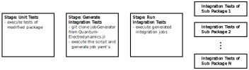

Automatic Testing
In the QuantumElectrodynamics.jl eco-system, we use Continuous integration (CIs) for running automatic tests. Each time, when a pull request is opened on GitHub.com or changes are committed to an existing pull request, the CI pipeline is triggered and starts a test script. The result of the tests will be reported in the pull request. In QuantumElectrodynamics.jl, we distinguish between two kinds of tests
- Unit tests: tests which check the functionality of the modified (sub-) package. Those tests can either run standalone or use the functionality of other (third-party) packages.
- Integration tests: tests which check the interoperatebility of the modified package with all sub-packages. For example, if package
Adepends on packageBand you change packageB, the integration test will check, if packageAstill works with the new version of packageB.
The CI will first execute the unit tests. Then, if all unit tests are passed, the integration tests will be started.
Our CI uses the GitLab CI because it allows us to use CI resources provided by HIFIS. There, we can use strong CPU runners and special runners for testing on Nvidia and AMD GPUs.
Unit Tests for CI Users
The unit tests are automatically triggered, if you open a pull request, which target the main or dev branch. Before the tests start, the CI sets up the test environment. Thus, the Project.toml of the project is taken and the latest development version of each QuantumElectrodynamics.jl dependency is added. Other dependencies will regularly be resolved by the Julia Package manager. Afterwards the unit tests will be executed.
You can also modify which version of a QuantumElectrodynamics.jl dependency should be used. For example if you need to test your code with a function, which is not merged in the development branch yet. Thus, you need to add a specific line to your commit message with the following format:
CI_UNIT_PKG_URL_<dep_name>: https://github.com/<user>/<dep_name>#<commit_hash>You can find the <dep_name> name in the Project.toml of the dependent project. For example, let's assume the name of the dependent package is depLibrary. The url of the fork is https://github.com/user/depLibrary.jl and the required feature has the commit sha 45a753b.
This commit extends function foo with a new
function argument.
The function argument is required to control
the new functionality.
If you pass a 0, it has a special meaning.
CI_UNIT_PKG_URL_depLibrary: https://github.com/user/depLibrary.jl#45a753bIt is also possible to set a custom URL for more than one package. Simply add an additional line with the format CI_UNIT_PKG_URL_<dep_name>: https://github.com/<user>/<dep_name>#<commit_hash> to the commit message.
You don't need to add a new commit to set custom URLs. You can modify the commit message with git commit --amend and force push to the branch. This also starts the CI pipeline again.
There is a last job, which checks if lines starting with CI_UNIT_PKG_URL_ exist in the commit message of the latest commit. If so, the unit test will fail. This is required, because otherwise the merged code would depend on non merged changes in sub-packages and would be non-compatible.
If you use CI_UNIT_PKG_URL_, the CI pipeline will fail which does not mean that the actual tests are failing.
Integration Tests for CI Users
The integration tests are automatically triggered if you open a pull request that targets the main or dev branch, and the unit tests have passed. The integration tests itself are in an extra stage of the CI.

If the tests pass successfully, you don't need to do anything. If they fail, i.e. the change breaks the interoperability with another package in the QuantumElectrodynamics.jl ecosystem, the pull request will suspend, and one has two options to proceed:
- One can solve the problem locally, by changing the code of the modified (sub-) package. The workflow is the same as for fixing unit tests.
- One needs to modify the depending package, which failed in the integration test. In the following, we describe how to provide the necessary changes to the downstream package and make the CI pass the integration tests, which will resume the pull request.
For better understanding, the package currently modified by the pull request is called orig, and the package that depends on it is referred to as dep. This means in practice, the Project.toml of the project dep contains the dependency to orig. First, one should fork the package dep and checkout a new feature branch on this fork. The fix of the integration issue for dep is now developed on the feature branch. Once finished, the changes to dep are push to GitHub, and a pull request on dep is opened to check in the changes. By default, the unit test for dep should fail, because the CI in dep needs to use the modified version of orig. The solution for this problem is explained in the section Unit Test for CI Users. Using this, one should develop the fix on the feature branch until the CI of dep passes all unit tests. In this case, the original pull request in the upstream package orig can be resumed. Therefore, one needs to tell the CI of orig that the integration tests should use the fixed version package dep, which is still on the feature branch in a pull request on dep. In order to proceed, the CI on orig needs information on where the fix for dep is located. This is given to the CI of orig in a commit message on the origin branch of the pull request on orig, one just needs to add a new line with the following format to the commit message:
CI_INTG_PKG_URL_<dep_name>: https://github.com/<user>/<dep_name>#<commit_hash>You can find the names of the environment variables in the section Environment Variables. For an example let's assume the name of the dep package is dep1.jl, user1 forked the package and the commit hash of the fix for package dep1.jl is 45a723b. Then, an example message could look like this:
This commit extends function foo with a new
function argument.
The function argument is required to control
the new functionality.
If you pass a 0, it has a special meaning.
CI_INTG_PKG_URL_DEP1JL: https://github.com/user1/dep1.jl#45a723bIt is also possible to set a custom URL for more than one package, which depends on orig. Simply add an additional line of the shape CI_INTG_PKG_URL_<dep_name>: https://github.com/<user>/<dep_name>#<commit_hash> to the commit message.
You don't need to add a new commit to set custom URLs. You can modify the commit message with git commit --amend and force push to the branch. This also starts the CI pipeline again.
Environment Variables
The following table shows the names of the environment variables to use custom URLs for the unit and integration tests.
| Package Name | Unit Test | Integration Test |
|---|---|---|
| QEDbase.jl | CI_UNIT_PKG_URL_QEDbase | CI_INTG_PKG_URL_QEDbase |
| QEDcore.jl | CI_UNIT_PKG_URL_QEDcore | CI_INTG_PKG_URL_QEDcore |
| QEDevents.jl | CI_UNIT_PKG_URL_QEDevents | CI_INTG_PKG_URL_QEDevents |
| QEDfields.jl | CI_UNIT_PKG_URL_QEDfields | CI_INTG_PKG_URL_QEDfields |
| QEDprocesses.jl | CI_UNIT_PKG_URL_QEDprocesses | CI_INTG_PKG_URL_QEDprocesses |
Unit Tests for CI Develops
In this section, we explain how the unit tests are prepared and executed. It is not mandatory to read the section if you only want to use the CI.
Before the unit tests are executed, the SetupDevEnv.jl is executed, which prepares the project environment for the unit test. It reads the Project.toml of the current project and adds the version of the dev branch of all QED dependency (Pkg.develop()) if no line starting with CI_UNIT_PKG_URL_ was defined in the commit message. If CI_UNIT_PKG_URL_ was defined, it will use the custom URL.
The commit message is defined in the environment variable CI_COMMIT_MESSAGE by GitLab CI. If the variable is not defined, the script ignores the commit message. If you want to disable reading the commit message, you can set the name of the commit message variable to an undefined variable via the first argument of the integTestGen.jl script. We use this when executing the CI on the main or dev branch. On these branches, it should not be possible to use custom URLs for unit or integration tests. Therefore we disable it, which also allows the use of CI_INTG_PKG_URL_ variables as regular part of the merge commit message.
Running Locally
If you want to run the script locally, you can set custom URLs via environment variables. For example:
CI_UNIT_PKG_URL_QEDbase="www.github.com/User/QEDbase#0e1593b" CI_UNIT_PKG_URL_QEDfields="www.github.com/User/QEDfields#60324ad" julia --project=/path/to/QED/repo SetupDevEnv.jl`Integration Tests for CI Develops
In this section, we explain how the integration tests are created and executed. It is not mandatory to read the section if you only want to use the CI. The following figure shows the stages of the CI pipeline:

All of the following stages are executed in the CI pipeline of the package, where the code is modified. We name the package orig for easier understanding of the documentation. A package who uses orig is called user. In practice, this means the Project.toml of the project user contains the dependency to orig. A list of user is called users.
Stage: Unit Tests
This stage executes the unit tests of orig via Pkg.test(). The integration tests are only executed, when the unit tests are passed. If the unit tests would not pass, it would test other (sub-) packages with the broken package orig and therefore we cannot expect, that the integration tests pass.
Stage: Generate integration Tests
The integration tests checks, if all (sub-) packages which use the package orig as dependency still work with the code modification of the current pull request.
Before we talk about the details, here is a small overview on what the integTestGen.jl script is doing. First the CI needs to determine, which (sub-) packages has orig as dependency. Therefore the CI downloads the integTestGen.jl script from the QuantumElectrodynamics.jl project via git clone. The integTestGen.jl script finds out, which (sub-) package use orig and generates for each (sub-) package a new CI test job. So the output of the integTestGen.jl is a GitLab CI yaml file, which can be executed via GitLab CI child pipeline.
The integTestGen.jl script traverses the dependency tree of QuantumElectrodynamics.jl package. Because each QED sub-package is a dependency of the QuantumElectrodynamics.jl package, the QuantumElectrodynamics.jl dependency tree contains implicitly all dependency trees of the sub-packages. So the script is traversing the tree and creating a list of sub-packages who depends on orig. This list is called users.
For each user from the list of users we need to define a separate CI job. First, the job checkouts the dev branch of the git repository of user. Then it sets the modified version of orig as dependency (Pkg.develop(path="$CI_package_DIR")). Finally, it executes the unit tests of user. The unit tests of user are tested with the code changes of the current pull request.
If the dev branch of user does not work, it is also possible to define a custom git commit to a working commit via the git commit message of the pull request of orig. For more details see Integration Tests for CI Users.
If a sub-package triggers an integration test, the main package QuantumElectrodynamics.jl is passive. It does not get any notification or trigger any script. The repository is simply cloned.
The commit message is defined in the environment variable CI_COMMIT_MESSAGE by GitLab CI. If the variable is not defined, the script ignores the commit message. If you want to disable reading the commit message, you can set the name of the commit message variable to an undefined variable via the first argument of the integTestGen.jl script. We use this when executing the CI on the main or dev branch. On these branches, it should not be possible to use custom URLs for unit or integration tests. Therefore we disable it, which also allows the use of CI_INTG_PKG_URL_ variables as regular part of the merge commit message.
Stage: Run Integration Tests
This stage uses the generated job yaml to create and run new test jobs. It uses the GitLab CI child pipeline mechanism.
Stage: Integration Tests of Sub-Packages N
Each job clones the repository of the sub-package. After the clone, it uses the Julia function Pkg.develop(path="$CI_package_DIR") to replace the dependency to the package orig with the modified version of the pull request and execute the tests of the sub-package via Pkg.test().
The integration tests of each sub-package are executed in parallel. So, if the integration tests of a package fails, the integration tests of the other packages are still executed and can pass.
Running Locally
The integTestGen.jl script has a special behavior. It creates its own Project.toml in a temporary folder and switches its project environment to it. Therefore, you need to start the script with the project path --project=ci/integTestGen. You also need to set two environment variables:
- CI_DEPENDENCY_NAME: Name of the
orig. For exampleQEDbase. - CI_PROJECT_DIR: Path to the project root directory of
orig. This path is used in the generated integration test, to set the dependency the modified code oforig.
The following example assumes that the QuantumElectrodynamics.jl project is located at $HOME/projects/QuantumElectrodynamics.jl and the project to test is QEDbase.jl and is located at $HOME/projects/QEDbase.jl.
CI_DEV_PKG_NAME=QEDbase CI_PROJECT_DIR="$HOME/projects/QEDbase.jl" julia --project=$HOME/projects/QuantumElectrodynamics.jl/ci/integTestGen $HOME/projects/QuantumElectrodynamics.jl/ci/integTestGen/src/integTestGen.jl